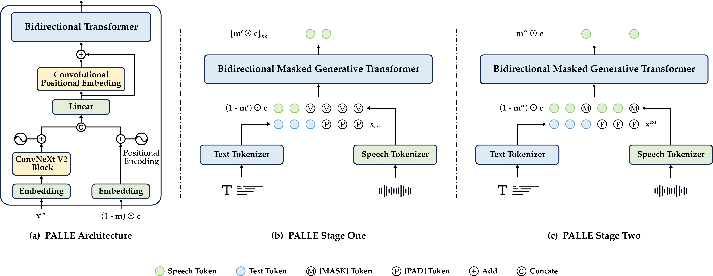

PALLE
Pseudo-Autoregressive Neural Codec Language Models for Efficient Zero-Shot Text-to-Speech Synthesis
Abstract. Recent zero-shot text-to-speech (TTS) systems face a common dilemma: autoregressive (AR) models suffer from slow generation and lack duration controllability, while non-autoregressive (NAR) models lack temporal modeling and typically require complex designs. In this paper, we introduce a novel pseudo-autoregressive (PAR) codec language modeling approach that unifies AR and NAR modeling. Combining explicit temporal modeling from AR with parallel generation from NAR, PAR generates dynamic-length spans at fixed time steps. Building on PAR, we propose PALLE, a two-stage TTS system that leverages PAR for initial generation followed by NAR refinement. In the first stage, PAR progressively generates speech tokens along the time dimension, with each step predicting all positions in parallel but only retaining the left-most span. In the second stage, low-confidence tokens are iteratively refined in parallel leveraging the global contextual information. Experiments demonstrate that PALLE, trained on LibriTTS, outperforms state-of-the-art systems trained on large-scale data, including F5-TTS, E2-TTS, and MaskGCT, on the LibriSpeech test-clean set in terms of speech quality, speaker similarity, and intelligibility, while achieving up to ten times faster inference speed.
Contents
Model Overview

Figure. Illustration of the two-stage PALLE framework. (a) The shared architecture: a bidirectional masked generative transformer. (b) Stage one: the model predicts all token positions in parallel but retains only the leftmost span at each step. (c) Stage two: the model refines the initial speech tokens, where low-confidence tokens are re-masked and regenerated using contextual information.
Zero-Shot Text-to-Speech for Cross-Sentence Task
Samples are from LibriSpeech dataset.
| English Text | Speaker Prompt | MaskGCT | E2 TTS | F5-TTS | PALLE (estimated duration) | PALLE (groud-truth duration) |
|---|---|---|---|---|---|---|
| then she gave rosalie back her magic ring thanking the kind witch for all she had done for them | ||||||
| the ideas also remain but they have become types in nature forms of men animals birds fishes | ||||||
| the only cheerful conversation was the conversation across the table between naomi and me | ||||||
| they informed the english parliament of this unexpected incident and assured them that they had entered into no private treaty with the king | ||||||
| the others having been in operation too short a time to show definite results although they also went quickly to a dividend basis | ||||||
| she wanted a glance of the new books and periodicals and talk of great philanthropies and reforms | ||||||
| all my danger and sufferings were needed to strike a spark of human feeling out of him but now that i am well his nature has resumed its sway | ||||||
| they do not go where the enemies of the gospel predominate they go where the christians are | ||||||
| you have received us with all that courtesy and hospitality for which your character in england stands so high | ||||||
| even so i had just returned from an arduous journey exhausted and badly needing a rest |
Ethics Statement
PALLE is purely a research project. PALLE could synthesize speech that maintains speaker identity and could be used for education, entertainment, journalistic, self-authored content, accessibility features, interactive voice response systems, translation, chat-bot, and so on. While PALLE can speak in a voice like the voice talent, the similarity, and naturalness depend on the length and quality of the speech prompt, the background noise, as well as other factors. It may carry potential risks in the misuse of the model, such as spoofing voice identification or impersonating a specific speaker. We conducted the experiments under the assumption that the user agrees to be the target speaker in speech synthesis. If the model is generalized to unseen speakers in the real world, it should include a protocol to ensure that the speaker approves the use of their voice and a synthesized speech detection model.
This page is for research demonstration purposes only.